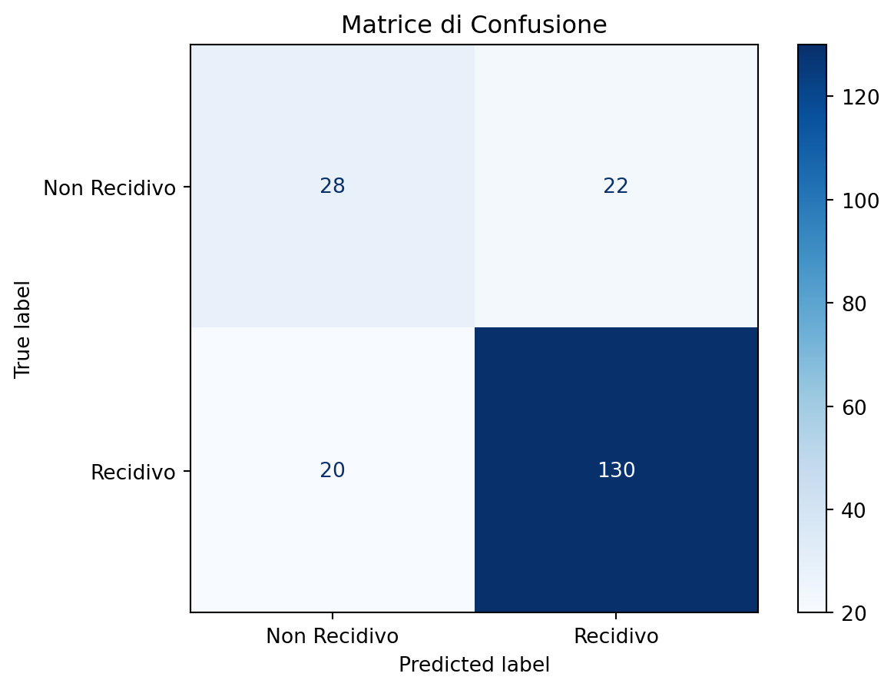
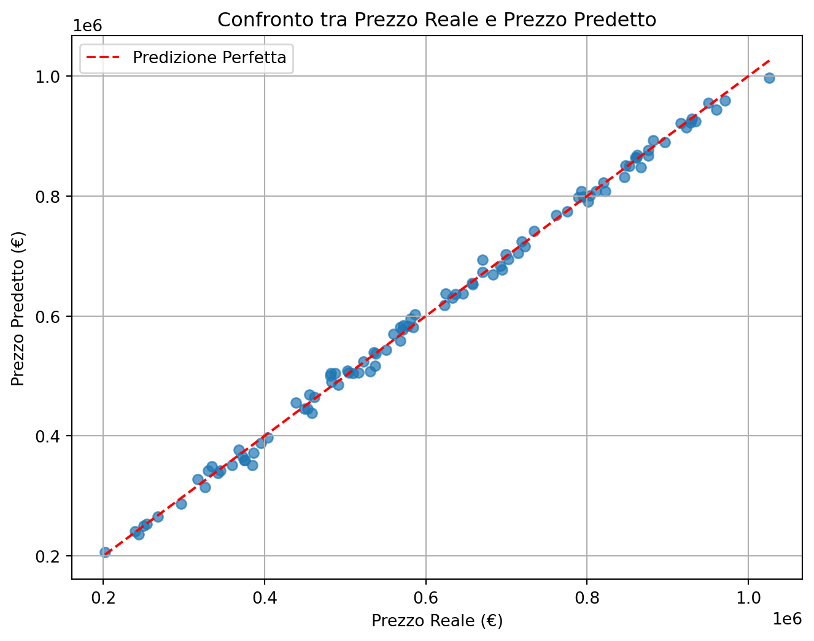

L’apprendimento supervisionato è un sottoinsieme del machine learning che si occupa di costruire modelli predittivi utilizzando un dataset etichettato, dove ogni esempio di input è associato a un output corrispondente (l’etichetta). Il processo di apprendimento supervisionato può essere visto come una forma di mappatura funzionale (f: X Y), dove (X) rappresenta lo spazio degli input (caratteristiche o feature) e (Y) rappresenta lo spazio degli output (etichette). L’obiettivo principale è imparare una funzione (f) che, dato un nuovo input, sia in grado di predire l’output corretto. Il processo di addestramento coinvolge due fasi principali: l’apprendimento e la generalizzazione. Durante la fase di apprendimento, il modello viene addestrato su un insieme di dati di addestramento, cercando di minimizzare la funzione di perdita, che misura la discrepanza tra le previsioni del modello e le etichette effettive. Successivamente, nella fase di generalizzazione, il modello viene testato su nuovi dati non visti per valutare la sua capacità di fare previsioni accurate al di fuori del set di addestramento. I principi fondamentali che guidano l’apprendimento supervisionato includono la funzione di perdita, che determina quanto una previsione è lontana dal valore vero; l’ottimizzazione, che è il processo attraverso il quale il modello migliora le sue previsioni iterativamente; e il bias-variance tradeoff, che è il bilanciamento tra un modello troppo semplice (alto bias) e uno troppo complesso (alta varianza).
9.2 Classificazione
La classificazione è una tecnica di apprendimento supervisionato in cui l’obiettivo è assegnare una classe o etichetta specifica a un input, in base a un insieme di dati di addestramento. Esistono vari tipi di problemi di classificazione:
Classificazione binaria: Qui, l’output è limitato a due classi, come “sì” o “no”, “spam” o “non spam”. Questo tipo di problema è comune in scenari come la diagnosi medica (es. malato o non malato) e nella sicurezza informatica (es. email sicura o phishing). Tra le tecniche utilizzate si possono citare approcci come le reti neurali e le macchine a vettori di supporto (SVM)
Classificazione multiclasse: In questo caso, l’output può appartenere a una di più classi (es. classificare un documento come “legale”, “finanziario” o “scientifico”). Le tecniche utilizzate possono includere approcci come la regressione logistica multinomiale, le reti neurali e l’applicazione multipla di macchine a vettori di supporto (SVM).
Classificazione multilabel: Qui, un singolo input può essere associato a più classi contemporaneamente (es. un articolo di giornale che potrebbe essere classificato sia come “politico” che come “economico”). Tecniche come l’approccio One-vs-All e le reti neurali sono frequentemente utilizzate in questi contesti.
Un punto di interesse particolare nella classificazione è il concetto di boundary decisionale. Questo rappresenta il confine nello spazio delle caratteristiche che separa le diverse classi. Nei modelli lineari, questo confine è una linea retta o un iperpiano, mentre nei modelli non lineari può assumere forme molto più complesse.
9.3 Regressione
La regressione è un tipo di problema di apprendimento supervisionato, focalizzato sulla previsione di un valore continuo piuttosto che su una classe discreta. A differenza della classificazione, dove l’output è un’etichetta, nella regressione l’output è un valore numerico che può variare su un intervallo continuo.
9.4 Algoritmi Principali dell’Apprendimento Supervisionato
L’apprendimento supervisionato si avvale di una vasta gamma di algoritmi che possono essere utilizzati per risolvere problemi sia di classificazione che di regressione. Ogni algoritmo ha caratteristiche specifiche che lo rendono più o meno adatto a particolari tipi di dati e problemi. Di seguito, verranno presentati alcuni dei principali algoritmi utilizzati nell’apprendimento supervisionato.
9.4.1 Regressione Lineare
La regressione lineare è uno degli algoritmi più semplici e ampiamente utilizzati per problemi di regressione. Assume una relazione lineare tra le variabili indipendenti e la variabile dipendente e cerca di trovare la retta (o l’iperpiano nel caso di più variabili indipendenti) che meglio approssima i dati. La semplicità della regressione lineare la rende facile da interpretare, ma la sua capacità di modellare solo relazioni lineari può limitare la sua applicabilità in scenari più complessi.
9.4.2 Regressione Logistica
La regressione logistica è un algoritmo di classificazione che viene utilizzato quando l’output è binario. A differenza della regressione lineare, la regressione logistica utilizza una funzione logistica (o sigmoide) per modellare la probabilità che un dato appartenga a una classe specifica. Questo approccio è ampiamente utilizzato per problemi come la classificazione di e-mail come “spam” o “non spam” o per la predizione di eventi binari (es. successo o fallimento di un’azione legale).
9.4.3 Alberi di Decisione
Gli alberi di decisione sono modelli non parametrici che possono essere utilizzati sia per la classificazione che per la regressione. Essi segmentano il dataset in sottogruppi omogenei attraverso una serie di decisioni basate sui valori delle caratteristiche. Ogni nodo dell’albero rappresenta una decisione basata su una caratteristica, e i rami rappresentano le possibili conseguenze di tale decisione. Gli alberi di decisione sono facili da interpretare e visualizzare, il che li rende particolarmente utili quando è necessaria una comprensione trasparente del processo decisionale. Tuttavia, gli alberi di decisione possono essere inclini all’overfitting, specialmente se non adeguatamente potati.
9.4.4 Random Forest
Il Random Forest è un metodo ensemble basato su alberi di decisione. Consiste in un insieme di alberi di decisione indipendenti addestrati su diverse porzioni del dataset (attraverso il bootstrapping) e utilizzando un sottoinsieme casuale di caratteristiche. Il risultato finale è ottenuto aggregando le previsioni di tutti gli alberi (es. tramite voto di maggioranza per la classificazione o media per la regressione). Questa tecnica riduce significativamente il rischio di overfitting rispetto a un singolo albero di decisione e migliora la precisione e la robustezza del modello.
9.4.5 Support Vector Machines (SVM)
Le Support Vector Machines (SVM) sono algoritmi molto potenti sia per la classificazione. Il loro obiettivo è trovare un iperpiano ottimale che separi i dati di diverse classi con il massimo margine possibile. Le SVM sono particolarmente efficaci in spazi ad alta dimensionalità e possono essere estese per gestire separazioni non lineari utilizzando il kernel trick, che permette di mappare i dati in uno spazio di dimensione superiore dove la separazione diventa lineare.
9.4.6 k-Nearest Neighbors (k-NN)
Il k-Nearest Neighbors (k-NN) è un algoritmo di classificazione basato su un’idea semplice ma efficace: per predire l’etichetta di un nuovo dato, si cercano i k punti più vicini nel dataset di addestramento e si assegna al nuovo dato la classe maggioritaria (nel caso di classificazione) o la media dei valori (nel caso di regressione). Il k-NN è molto intuitivo e non richiede una fase di addestramento, ma può diventare inefficiente con dataset molto grandi o in presenza di rumore.
9.4.7 Reti Neurali
Le reti neurali sono modelli ispirati al funzionamento del cervello umano e sono particolarmente potenti per la modellazione di relazioni non lineari complesse. Una rete neurale è composta da strati di nodi (neuroni) interconnessi, dove ciascun nodo applica una funzione non lineare ai dati in ingresso e trasmette il risultato ai nodi dello strato successivo. Le reti neurali possono essere utilizzate sia per la classificazione che per la regressione, ma richiedono un’attenta configurazione dei parametri e una grande quantità di dati per addestramento.
Percettrone Multistrato (MLP): È una delle architetture più semplici di reti neurali, composto da uno o più strati nascosti tra l’input e l’output. Il MLP è capace di apprendere rappresentazioni complesse dei dati, ma richiede un’attenta configurazione dei parametri e una grande quantità di dati per addestramento.
Reti Neurali Convoluzionali (CNN): Utilizzate principalmente per l’elaborazione di immagini, le CNN applicano convoluzioni ai dati in ingresso per estrarre automaticamente caratteristiche di alto livello. Sono particolarmente efficaci in problemi di riconoscimento di immagini e visione artificiale.
Reti Neurali Ricorrenti (RNN): Progettate per gestire dati sequenziali come testi o serie temporali, le RNN hanno connessioni che permettono l’uso di informazioni provenienti da precedenti stati dell’input. Questo le rende ideali per problemi come la modellazione del linguaggio naturale o la previsione di sequenze.
9.4.8 Gradient Boosting Machines (GBM)
Il Gradient Boosting è una tecnica di ensemble che costruisce modelli in modo sequenziale, dove ogni nuovo modello cerca di correggere gli errori commessi dai modelli precedenti. I modelli individuali sono generalmente alberi di decisione semplici (stump), e il risultato finale è una somma ponderata di questi alberi. Algoritmi popolari come XGBoost e LightGBM sono varianti ottimizzate del Gradient Boosting, note per la loro efficacia e velocità, specialmente in competizioni di machine learning.
9.4.9 Naive Bayes
Il Naive Bayes è un algoritmo di classificazione basato sul teorema di Bayes, con l’assunzione “naive” che le caratteristiche siano indipendenti l’una dall’altra, una ipotesi raramente vera nel mondo reale. Nonostante questa assunzione, il Naive Bayes è sorprendentemente efficace, specialmente per problemi di classificazione testuale come la categorizzazione di documenti o l’analisi del sentiment.
9.4.10 Ensemble Learning
L’ensemble learning combina le previsioni di più modelli per ottenere un risultato finale più robusto e accurato. Oltre al Random Forest e al Gradient Boosting, altre tecniche di ensemble includono il bagging e lo stacking. Il bagging riduce la varianza addestrando lo stesso modello su diverse porzioni del dataset, mentre lo stacking combina le previsioni di diversi modelli tramite un meta-modello, che apprende a pesare le diverse previsioni.
9.4.11 Conclusioni
Ciascuno degli algoritmi discussi ha punti di forza e di debolezza che lo rendono più o meno adatto a particolari problemi di apprendimento supervisionato. La scelta dell’algoritmo più appropriato dipende dalla natura del problema, dalla quantità e qualità dei dati disponibili e dalle specifiche esigenze dell’applicazione. In contesti giuridici, dove la trasparenza e l’interpretabile sono spesso fondamentali, gli algoritmi semplici e interpretabili come gli alberi di decisione o la regressione logistica potrebbero essere preferibili, mentre in applicazioni più complesse come l’analisi di grandi volumi di dati testuali, algoritmi più sofisticati come le reti neurali o le tecniche di ensemble possono offrire prestazioni superiori.
9.5 Apprendimento per Rinforzo
L’apprendimento per rinforzo (Reinforcement Learning, RL) si distingue dagli altri tipi di apprendimento supervisionato in quanto l’agente apprende attraverso l’interazione diretta con l’ambiente, senza avere accesso diretto a una serie di etichette corrette per ogni azione. In RL, l’agente prende decisioni sequenziali e riceve ricompense (o punizioni) che riflettono l’efficacia delle sue azioni. Il compito dell’agente è quindi quello di imparare una politica, o strategia, che massimizza la ricompensa totale nel tempo. Gli elementi chiave nell’apprendimento per rinforzo includono:
Agente: L’entità che prende decisioni nell’ambiente.
Ambiente: Il contesto in cui l’agente opera e da cui riceve feedback sotto forma di ricompense.
Politica (Policy): La strategia che l’agente segue per determinare quali azioni intraprendere in ogni stato.
Funzione di valore (Value Function): Una funzione che valuta l’utilità di essere in un certo stato, dato un insieme di azioni future possibili.
Funzione di ricompensa (Reward Function): Una funzione che fornisce un feedback immediato sulle azioni dell’agente.
9.5.1 Algoritmi Principali
Algoritmo di Monte Carlo (MC): Questo algoritmo valuta le politiche basandosi sui risultati di una serie di episodi completi. È un algoritmo on-policy, il che significa che l’agente deve seguire la politica corrente per apprendere.
Q-Learning: È uno degli algoritmi di apprendimento per rinforzo più semplici e più conosciuti. Q-Learning si basa sull’apprendimento della funzione Q, che stima la qualità (o valore) di un’azione in un dato stato. L’agente utilizza questa funzione per decidere quali azioni intraprendere al fine di massimizzare la ricompensa cumulativa. Q-Learning è un algoritmo off-policy, il che significa che l’agente può apprendere la politica ottimale indipendentemente dalla politica attualmente seguita.
Deep Q-Networks (DQN): Estende Q-Learning utilizzando reti neurali profonde per approssimare la funzione Q, consentendo così di gestire ambienti con spazi di stato molto grandi o continui. Questo approccio è stato utilizzato con successo in diversi contesti, tra cui il superamento delle prestazioni umane in giochi complessi come Atari.
9.5.2 Applicazioni
L’apprendimento per rinforzo è utilizzato in un’ampia varietà di applicazioni, che vanno dai giochi (es. scacchi, Go, e videogiochi come quelli sviluppati da OpenAI e DeepMind) alla robotica (es. robot che imparano a camminare o manipolare oggetti), fino a scenari come la guida autonoma. Nell’ambito giuridico, potrebbe essere applicato per ottimizzare flussi di lavoro complessi, simulare scenari di negoziazione o migliorare i processi decisionali attraverso simulazioni avanzate.
9.6 Overfitting e Underfitting
L’overfitting e l’underfitting sono due delle principali problematiche che emergono nell’apprendimento supervisionato e possono influenzare significativamente la capacità di un modello di generalizzare su nuovi dati.
Overfitting: Si verifica quando un modello diventa troppo complesso, catturando non solo i pattern rilevanti nei dati di addestramento ma anche il rumore. Un modello overfit avrà prestazioni eccellenti sui dati di addestramento ma scarse prestazioni su dati nuovi e non visti. Questo problema può essere mitigato attraverso tecniche come la regolarizzazione (es. Lasso, Ridge), l’early stopping (interrompere l’addestramento prima che il modello inizi a memorizzare il rumore), e l’utilizzo di più dati o di modelli più semplici.
Underfitting: Si verifica quando un modello è troppo semplice per rappresentare adeguatamente i dati. Un modello underfit avrà scarse prestazioni sia sui dati di addestramento che sui dati di test, poiché non riesce a catturare i pattern sottostanti. Per evitare l’underfitting, è necessario aumentare la complessità del modello o migliorare la qualità dei dati.
L’obiettivo nella costruzione di un modello è trovare il giusto equilibrio tra bias e varianza, in modo da ottenere un modello che sia abbastanza complesso da catturare i pattern rilevanti nei dati senza diventare così complesso da catturare anche il rumore.
9.7 Valutazione dei Modelli
La valutazione dei modelli è un passo critico per garantire che un modello di apprendimento supervisionato sia accurato, robusto e generalizzabile a dati non visti. La scelta delle metriche di valutazione dipende dal tipo di problema (classificazione o regressione) e dalle specifiche esigenze dell’applicazione. Innanzitutto, è importante sottolineare che la valutazione dei modelli si effettua sui dati di test, non sui dati di addestramento. Il modello deve dimostrare la capacità di generalizzare, ossia di fare previsioni accurate su nuovi dati che non ha mai visto prima.
9.7.1 Valutazione nei Problemi di Classificazione
Per i problemi di classificazione binaria (due classi, ad esempio A e B), le metriche di valutazione più comuni si basano sulla misurazione dei seguenti valori:
Veri Positivi (VP): il modello ha correttamente predetto che un certo numero di casi appartiene alla classe A e questi effettivamente appartengono alla classe A.
Falsi Positivi (FP): il modello ha predetto che un certo numero di casi appartiene alla classe A, ma in realtà appartengono alla classe B.
Veri Negativi (VN): il modello ha correttamente predetto che un certo numero di casi appartiene alla classe B e questi effettivamente appartengono alla classe B.
Falsi Negativi (FN): il modello ha predetto che un certo numero di casi appartiene alla classe B, ma in realtà appartengono alla classe A.
Le metriche di valutazione comuni includono:
Matrice di Confusione
La matrice di confusione riassume i valori di VP, FP, VN e FN in una tabella. È utile per analizzare in dettaglio le prestazioni del modello. La forma standard della matrice di confusione per un problema di classificazione binaria è la seguente:
Questa rappresentazione permette di identificare rapidamente dove il modello ha successo e dove commette errori.
Accuratezza
È la proporzione di previsioni corrette sul totale delle previsioni. Tuttavia, in presenza di classi sbilanciate, l’accuratezza può essere ingannevole.
AUC-ROC (Area Under the Curve - Receiver Operating Characteristic)
La curva ROC (Receiver Operating Characteristic) è un grafico che mostra la capacità di un classificatore binario di distinguere tra due classi, variando la soglia di classificazione. Si costruisce tracciando il tasso di veri positivi\(TPR\) contro il tasso di falsi positivi\(FPR\) per diverse soglie di decisione. L’AUC è l’area sotto questa curva:
AUC = 1: Modello perfetto.
AUC = 0.5: Modello casuale (nessuna capacità di discriminazione).
AUC < 0.5: Modello peggiore del caso casuale (probabile errore nel modello o nei dati).
curva ROC.png
9.7.2 Valutazione nei Problemi di Regressione
Errore Quadratico Medio (MSE - Mean Square Error):
L’Errore Quadratico Medio misura la media dei quadrati degli errori tra le previsioni del modello \(\hat{y}_i\) e i valori reali \(y_i\). La formula è: \[
\text{MSE} = \frac{1}{n} \sum_{i=1}^{n} (y_i - \hat{y}_i)^2
\] dove \(n\) è il numero totale di osservazioni.
Il MSE penalizza maggiormente gli errori grandi, rendendolo particolarmente sensibile ai valori anomali (outlier). È una delle metriche più comuni nei problemi di regressione.
Errore Assoluto Medio (MAE - Mean Absolute Error):
L’Errore Assoluto Medio misura la media delle differenze assolute tra le previsioni \(\hat{y}_i\)$ e i valori reali \(y_i\). La formula è \[
\text{MAE} = \frac{1}{n} \sum_{i=1}^{n} |y_i - \hat{y}_i|
\]
dove \(n\) è il numero totale di osservazioni. A differenza del MSE, il MAE non eleva al quadrato gli errori, il che lo rende meno sensibile agli outlier. È una scelta utile quando si desidera una valutazione robusta degli errori medi.
R² (R-quadrato):
Il coefficiente di determinazione \(R^2\) rappresenta la proporzione della varianza spiegata dal modello rispetto alla varianza totale nei dati. La formula è:
dove \(\bar{y}\) è la media dei valori reali.
Un valore di \(R^2\) vicino a 1 indica che il modello spiega bene la varianza dei dati, mentre un valore vicino a 0 indica il contrario. Tuttavia, questa metrica può risultare fuorviante in alcuni contesti, come in presenza di variabili irrilevanti.
Cross-Validation:
La cross-validation è una tecnica fondamentale per valutare la capacità di generalizzazione di un modello. Tra le varianti più comuni, la k-fold cross-validation suddivide il dataset in k sottoinsiemi \(k\)-folds. Il modello viene addestrato \(k\) volte, utilizzando ogni volta un fold diverso come set di test e gli altri \(k-1\) come set di addestramento. Il punteggio finale è la media dei punteggi calcolati su ciascun fold:
Questo metodo riduce il rischio di overfitting e fornisce una stima più affidabile delle prestazioni.
Bias e Varianza:
Il bilanciamento tra bias e varianza è cruciale nei problemi di regressione. Il bias rappresenta l’errore sistematico introdotto da un modello troppo semplice, che non cattura la complessità dei dati (underfitting). La varianza, invece, misura quanto il modello è sensibile alle variazioni nei dati di addestramento, portando a overfitting.
Il tradeoff bias-varianza può essere visualizzato come:
Dove il rumore è l’errore irreducibile presente nei dati. Tecniche come la regolarizzazione (ad esempio, Ridge o Lasso), la scelta di modelli meno complessi o l’ottimizzazione degli iperparametri possono aiutare a trovare il giusto equilibrio.
9.8 Laboratorio Python
9.8.1 Esperimento 1: Predizione della Recidiva su nuovi dati
In questo esperimento Python, procedendo come per l’esperimento in Section 8.12.1 simuleremo un dataset per prevedere la recidiva penale (recidivo o non recidivo) utilizzando un modello di classificazione. Creeremo un trend realistico: ad esempio, chi non ha un lavoro stabile e ha un reato precedente più grave avrà maggiore probabilità di essere recidivo. Infine, esamineremo un nuovo caso e prevederemo la probabilità di recidiva. Per comprendere il codice possiamo pensarlo composto da tre parti:
Generazione dei dati: Simuliamo variabili come età, gravità del reato, lavoro stabile e supporto familiare.
Addestramento del modello: Usiamo una Random Forest Classifier.
Valutazione del modello: Misuriamo l’accuratezza e visualizziamo i risultati in una matrice di confusione.
import numpy as npimport pandas as pdfrom sklearn.model_selection import train_test_splitfrom sklearn.ensemble import RandomForestClassifierfrom sklearn.metrics import accuracy_score, confusion_matrix, ConfusionMatrixDisplayimport matplotlib.pyplot as plt# Generazione dei dati simulatinp.random.seed(42)num_samples =1000eta = np.random.randint(18, 70, num_samples)gravita_reato = np.random.choice([1, 2, 3], size=num_samples, p=[0.5, 0.3, 0.2]) # 1=furto, 2=violenza, 3=omicidiolavoro_stabile = np.random.choice([0, 1], size=num_samples, p=[0.6, 0.4])supporto_familiare = np.random.choice([0, 1], size=num_samples, p=[0.4, 0.6])# Probabilità di recidiva basata su regole realisticherecidiva_prob = (0.4* (1- lavoro_stabile) +0.3* (3- gravita_reato) +0.3* (1- supporto_familiare))recidiva = (recidiva_prob > np.random.rand(num_samples)).astype(int)# Creazione del DataFramedata = pd.DataFrame({'eta': eta,'gravita_reato': gravita_reato,'lavoro_stabile': lavoro_stabile,'supporto_familiare': supporto_familiare,'recidiva': recidiva})# Divisione del datasetX = data[['eta', 'gravita_reato', 'lavoro_stabile', 'supporto_familiare']]y = data['recidiva']X_train, X_test, y_train, y_test = train_test_split(X, y, test_size=0.2, random_state=42)# Addestramento del modellomodel = RandomForestClassifier(random_state=42)model.fit(X_train, y_train)# Predizioni e valutazioney_pred = model.predict(X_test)accuracy = accuracy_score(y_test, y_pred)print(f"Accuratezza del modello: {accuracy:.2f}")# Matrice di confusionecm = confusion_matrix(y_test, y_pred)disp = ConfusionMatrixDisplay(confusion_matrix=cm, display_labels=["Non Recidivo", "Recidivo"])disp.plot(cmap=plt.cm.Blues)plt.title("Matrice di Confusione")plt.show()
Accuratezza del modello: 0.79

Adesso, supponiamo di avere un nuovo soggetto con le seguenti caratteristiche:
Età: 30 anni
Gravità del reato: 2 (violenza)
Lavoro stabile: No
Supporto familiare: Sì
Possiamo chiedere al modello di calcolare la probabilità che questo soggetto sia recidivo.
# Nuovo soggettonuovo_soggetto = pd.DataFrame({'eta': [30],'gravita_reato': [2],'lavoro_stabile': [0], # No'supporto_familiare': [1] # Sì})# Predizione del rischio di recidivarischio_recidiva = model.predict_proba(nuovo_soggetto)[:, 1][0] # Probabilità di essere recidivoclasse_predetta = model.predict(nuovo_soggetto)[0]print("dati del nuovo soggetto:")print(nuovo_soggetto)print(f"Probabilità di recidiva: {rischio_recidiva:.2f}")print(f"Classe Predetta: {'Recidivo'if classe_predetta ==1else'Non Recidivo'}")
dati del nuovo soggetto:
eta gravita_reato lavoro_stabile supporto_familiare
0 30 2 0 1
Probabilità di recidiva: 1.00
Classe Predetta: Recidivo
Ovviamente, questo è solo un esempio di base. Nella pratica, si dovrebbero considerare anche la normalizzazione dei dati, la gestione delle variabili categoriali e l’ottimizzazione degli iperparametri per migliorare le prestazioni. Ciononostante, si invita il lettore a provare a modificare i dati e i modelli per comprendere meglio il funzionamento dei modelli di apprendimento supervisionato.
9.8.2 Esperimento 2: Regressione del Costo di un Immobile
In questo esempio, simuleremo un dataset per prevedere il costo di un immobile. Usiamo un trend realistico: immobili più grandi, in quartieri più costosi e con più bagni avranno un prezzo più alto. Per comprendere il codice possiamo pensarlo composto da tre parti:
Generazione dei dati: Simuliamo variabili come superficie, numero di bagni e punteggio del quartiere.
Addestramento del modello: Usiamo una Random Forest Regressor.
Valutazione del modello: Visualizziamo i risultati in un grafico di dispersione.
from sklearn.ensemble import RandomForestRegressorfrom sklearn.metrics import mean_squared_error, r2_score# Generazione dei dati simulatinp.random.seed(42)num_samples =500superficie = np.random.randint(50, 300, num_samples) # Superficie in m²bagni = np.random.randint(1, 4, num_samples) # Numero di bagniquartiere = np.random.randint(1, 6, num_samples) # Punteggio del quartiere (1-5)# Prezzo basato su regole realisticheprezzo = ( superficie *3000+ bagni *10000+ quartiere *20000+ np.random.normal(0, 5000, num_samples) # Rumore casuale)# Creazione del DataFramedata = pd.DataFrame({'superficie': superficie,'bagni': bagni,'quartiere': quartiere,'prezzo': prezzo})# Divisione del datasetX = data[['superficie', 'bagni', 'quartiere']]y = data['prezzo']X_train, X_test, y_train, y_test = train_test_split(X, y, test_size=0.2, random_state=42)# Addestramento del modellomodel = RandomForestRegressor(random_state=42)model.fit(X_train, y_train)# Predizioni e valutazioney_pred = model.predict(X_test)mse = mean_squared_error(y_test, y_pred)r2 = r2_score(y_test, y_pred)print(f"Errore Quadratico Medio (MSE): {mse:.2f}")print(f"R² Score: {r2:.2f}")# Grafico di dispersioneplt.figure(figsize=(8, 6))plt.scatter(y_test, y_pred, alpha=0.7)plt.plot([y_test.min(), y_test.max()], [y_test.min(), y_test.max()], '--', color='red', label='Predizione Perfetta')plt.xlabel("Prezzo Reale (€)")plt.ylabel("Prezzo Predetto (€)")plt.title("Confronto tra Prezzo Reale e Prezzo Predetto")plt.legend()plt.grid()plt.show()
Errore Quadratico Medio (MSE): 121692189.69
R² Score: 1.00

Supponiamo di avere un nuovo immobile con le seguenti caratteristiche:
Superficie: 120 m²
Numero di bagni: 2
Punteggio del quartiere: 4
Il modello calcolerà il prezzo stimato per questo immobile.
# Nuovo immobilenuovo_immobile = pd.DataFrame({'superficie': [120],'bagni': [2],'quartiere': [4]})# Predizione del prezzo dell'immobileprezzo_stimato = model.predict(nuovo_immobile)[0]# Stampa dei dati del nuovo immobileprint("dati del nuovo immobile:")print(nuovo_immobile)# Stampa del prezzo stimatoprint(f"Prezzo stimato per il nuovo immobile: €{prezzo_stimato:,.2f}")
dati del nuovo immobile:
superficie bagni quartiere
0 120 2 4
Prezzo stimato per il nuovo immobile: €438,061.61
Occorre ricordare che i dati sono simulati generando dei numeri casuali. Quindi, i legami tra le variabili e le uscite sono altrettanto casuali e potrebbero non essere realistici. Ciononostante, si invita il lettore a provare a modificare i dati e i modelli per comprendere meglio il funzionamento dei modelli di apprendimento supervisionato.
9.9 Esercizi
9.9.1 Esercizio 1: Calcolo delle Metriche di Classificazione
Consideriamo un modello utilizzato per predire la recidiva penale, dove l’obiettivo è determinare se un individuo sarà recidivo (1) o non recidivo (0) entro un certo periodo di tempo. Supponiamo di avere un dataset di test composto da 100 individui, e il modello ha prodotto le seguenti previsioni:
Veri Positivi (VP): 40 (il modello ha correttamente predetto che 40 individui sarebbero recidivi)
Falsi Positivi (FP): 10 (il modello ha predetto che 10 individui sarebbero recidivi, ma in realtà non lo sono)
Veri Negativi (VN): 30 (il modello ha correttamente predetto che 30 individui non sarebbero recidivi)
Falsi Negativi (FN): 20 (il modello ha predetto che 20 individui non sarebbero recidivi, ma in realtà lo sono)
Il lettore calcoli i seguenti valori commentando i risultati ottenuti:
Accuratezza (Accuracy)
Precisione (Precision)
Tasso di Recall (Recall)
Tasso di Falso Positivo (False Positive Rate - FPR)
Tasso di Falso Negativo (False Negative Rate - FNR)
9.9.2 Esercizio 2: Calcolo delle Metriche di regressione
Consideriamo un modello di regressione utilizzato per predire il valore di un immobile. Supponiamo di avere un dataset di test con i valori reali di 5 immobili e le previsioni del modello, come mostrato nella tabella seguente:
Immobile
Valore Reale (€)
Valore Predetto (€)
1
300,000
310,000
2
450,000
430,000
3
500,000
490,000
4
400,000
420,000
5
350,000
345,000
Il lettore calcoli i seguenti valori commentando i risultati ottenuti:
Errore Assoluto Medio (MAE)
Errore Quadratico Medio (MSE)
Errore Quadratico Medio Radice (RMSE)
R² (R-quadrato)
### Esercizio 3: Analisi del Rischio di Credito
Una banca vuole sviluppare un modello di apprendimento supervisionato per valutare il rischio di credito dei richiedenti prestiti. L’obiettivo è prevedere se un richiedente sarà in grado di rimborsare il prestito o se c’è un’alta probabilità di inadempienza (default). Per fare ciò la banca ha a disposizione un dataset storico con le informazioni sui clienti e sui prestiti già erogati. Dataset (Simulato):
Età : Età del richiedente (valore numerico, in anni).
Reddito Annuale : Reddito annuo del richiedente (valore numerico, in euro).
Anni di Impiego : Anni di impiego del richiedente (valore numerico).
Importo del Prestito : Importo del prestito richiesto (valore numerico, in euro).
Punteggio di Credito : Punteggio di credito del richiedente (valore numerico, tra 300 e 850).
Presenza di Garante : Se il richiedente ha presentato un garante (valore binario: 0 = No, 1 = Sì).
Stato di Inadempienza : Se il richiedente è andato in default sul prestito (valore binario: 0 = No, 1 = Sì).
Il lettore è invitato a:
spiegare se si tratta di un problema di apprendimento supervisionato o non supervisionato.
indichi il tipo di problema di apprendimento supervisionato è (classificazione o regressione).
indichi qual è la variabile target (o etichetta) in questo problema?